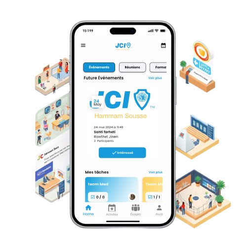
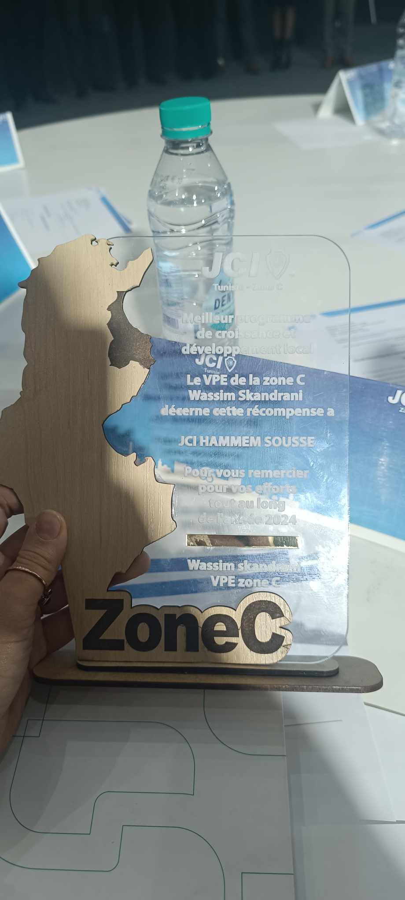
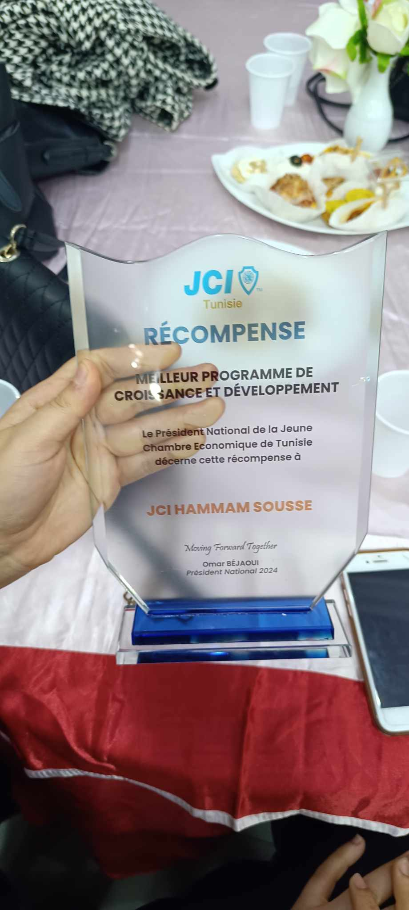

Awards of This Application
BEST GROWTH AND DEVELOPMENT PROGRAM FOR THE C AREA
JCI Area C
This prestigious award from JCI JCI Area C recognizes our outstanding mobile application that:
- Transformed local communities through accessible digital solutions
- Pioneered new approaches in civic engagement technology
- Established best practices for regional development programs
The award celebrates our commitment to JCI's vision of creating positive change by empowering young active members through technological innovation and social entrepreneurship.

Regional Award Ceremony - JCI Area C
BEST NATIONAL GROWTH AND DEVELOPMENT PROGRAM
JCI Tunisia
This prestigious award recognizes our team's outstanding mobile application that:
- Drove meaningful change by addressing critical community needs
- Set new standards in user experience and technical performance
- Became a model for sustainable digital development nationwide
This honor aligns with global sustainable development goals, demonstrating how youth-led technological innovation can address universal challenges while creating local impact.

National Award Ceremony - JCI Tunisia